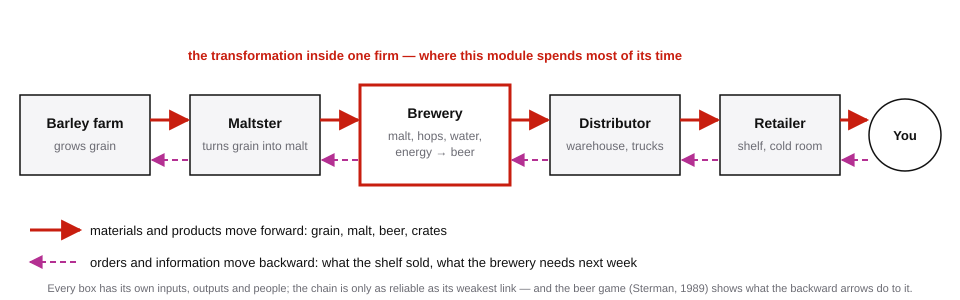
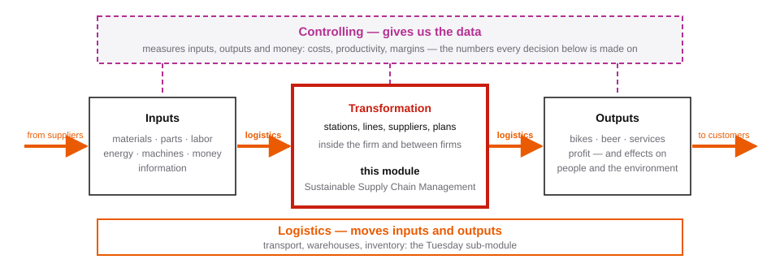
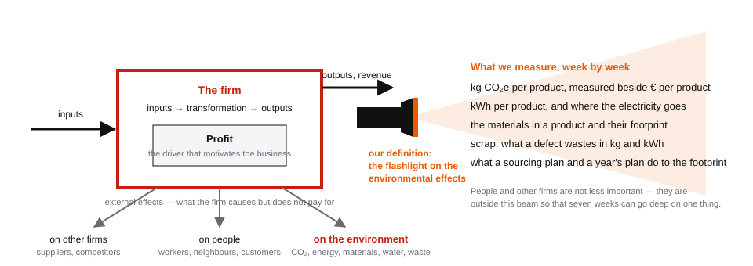

Sustainable Supply Chain Management
Sustainable Supply Chain Management — winter term 2026/27
This online script, the course notes of the module, is its frame. It tells you what happens on each of the seven Thursdays, what you practise and what counts, and it condenses every week’s content to a page you can revise from, or hand to an AI assistant to quiz you. The chapters themselves are in the textbook; this script cites them, it does not replace them.
At the end of the module you can …
- explain the central ideas of operations and supply chain management in plain words and in the textbook’s terms: productivity, process and capacity, design for sustainability, quality, forecasting, supply chains, aggregate planning;
- compute the numbers behind them by hand for a small case, and check a computer’s numbers against your own;
- model a small problem in Google Colab, and clean a messy dataset before you trust it;
- use an AI assistant for these tasks and say, for every answer it gives, how you checked it.
The first idea: productivity
Everything in this module starts from one ratio. A firm takes inputs (people’s hours, materials, energy, machines, money) and turns them into outputs (products, services, deliveries). Productivity is output divided by input: guests served per hour of party preparation, boxes moved per person-hour, bikes delivered per euro or per tonne of CO₂. The number above the line (the numerator) is usually easy to count. The number below the line (the denominator) is a choice, and the choice decides the answer: the same plan can be more productive per hour and less productive per euro. Week 1 builds this idea from your own experience, and every later week adds one thing that changes the ratio (Heizer et al., 2023, Ch. 1).
What the title says
Supply chain
A supply chain is the row of firms, and the row of steps inside each firm, that turn raw materials into a product in someone’s hands. Take a beer: barley is grown, malted, brewed, moved to a warehouse, put on a shelf, bought. Each box in the picture is a firm with its own inputs, its own people and its own output, and the boxes are connected twice — by the materials that move forward and by the orders and information that move backward.

Two things follow from the picture, and both run through the whole module. The chain produces only as much as its slowest step. And the backward arrows have a life of their own: a small change in what the shelf sells becomes a large swing in what the brewery makes, because every box reacts to the box after it with a delay. The beer game shows this in an afternoon (Sterman, 1989); the forecasting and planning weeks show it in numbers.
Where this module sits: inputs, transformation, outputs
Managing a business means transforming inputs into outputs, and doing that on the basis of data. Three sub-modules of your term divide that sentence between them.

Controlling gives us the data: it measures what goes in, what comes out and what it costs, and turns the factory into numbers a manager can act on. Logistics, the Tuesday sub-module, moves inputs and outputs: transport, warehouses, inventory, the arrows between the boxes. This module is about the transformation in the middle — how a line of stations turns parts into products, and how a chain of firms turns a forecast into a plan and a supplier into a delivery. Where an example helps, the three sub-modules borrow from one fictional bike maker, UrbanRide, whose trucks and stock the Tuesday module plans.
Sustainable
A business is driven by profit: it is what motivates the owners to run it, and every decision in this module is first checked against euro per bike. But a firm also causes effects it does not pay for — on the environment, on people, on other firms. Economists call them external effects (from Latin externus, “outward”: effects that fall outside the firm’s own books). A sustainable supply chain is one that is managed with those effects in view, not only with profit.

Our definition in this module is narrow on purpose: sustainable means looking at the environmental effects — CO₂, energy, materials, waste — beside profit. That is why, beside euros, the module keeps asking for kilograms of CO₂. Other definitions are wider. The Brundtland report defines sustainable development as meeting the needs of the present without compromising the ability of future generations to meet theirs (World Commission on Environment and Development, 1987); the triple bottom line asks a firm to report on people and planet beside profit (Elkington, 1997). Neither is wrong, and you will meet both in later courses.
In science, a definition is a tool, chosen for a purpose. It works like a flashlight: it lights one part of the room so that you can see it sharply, and it leaves the rest in the dark — not because the rest does not matter, but because you cannot look at everything at once and see anything. Seven weeks are short. Pointing the beam at the environmental effects lets us measure one thing well, from a single product to a year’s plan in Week 7, and the habit of measuring transfers to the other effects when a later course points the beam there.
The module in one page
Every lesson in the same order
Each new idea arrives in the same five steps: a real problem or puzzle from the chapter; the same idea in student life (a party, a moving day); the intuition, with the formula first in words and then in short practice interactions; the idea in a factory, with the textbook’s examples; and finally across a supply chain.
Every Thursday in the same rhythm
09:00–12:00: test and/or new concepts. In test weeks the morning opens with the test; then the new chapter: problem, examples, formulas in words, calculations by hand. 13:00–15:30: modelling and applied exercises. In Google Colab you set up the morning’s problem as a small model (one worked set-up, many practice problems, extensions for quick teams), and from Week 2 you also clean real-looking datasets with a commented script and an AI assistant. The afternoon ends with the bonus sheet.
Every exercise assumes you may use an AI assistant. The point is not whether you use it, but what you delegate, what you check, and how.
The seven Thursdays
| Week | Thursday | Chapter | Morning test |
|---|---|---|---|
| 1 | 1 Oct 2026 | Ch. 1 Operations and productivity | none |
| 2 | 8 Oct | Ch. 7 + S7 Process strategy, capacity | T1 · Ch. 1 |
| 3 | 15 Oct | Ch. 5 + S5 Design for supply-chain sustainability | none |
| 4 | 22 Oct | Ch. 6 + S6 Managing quality | T2 · Ch. 7, 5 |
| 5 | 29 Oct | Ch. 4 Forecasting | none |
| 6 | 5 Nov | Ch. 11 + S11 Supply chain management, Chopra Ch. 3 | T3 · Ch. 6, 4 |
| 7 | 12 Nov | Ch. 13 Aggregate planning and S&OP (sales and operations planning) | T4 · Ch. 11, Chopra 3, 13 |
S5, S6, S7 and S11 are the supplements that follow a chapter in the textbook. The overview page shows each week as a card; a week’s full page opens after the Thursday before it.
Reading
The textbook is Heizer et al. (2023), Operations Management: Sustainability and Supply Chain Management, 14th edition, Global Edition: one chapter per week. Week 6 adds Chapter 3 of Chopra (2019) on supply chain drivers and metrics. The slides help you into the chapter; they do not replace it.
Assessment, bonus and code names
The module mark comes from four tests in Weeks 2, 4, 6 and 7, each written alone first and then as a team, and one group project: 60 % individual tests, 15 % team tests, 25 % group project; as is common in Team-Based Learning, a peer evaluation factor adjusts each member’s share of the group mark. In the project, groups of four or five simulate in Colab what a supplier failure does to the line of a real product of their choice, and present the answer as an animation and a poster on 12 November.
In Weeks 1–6 the afternoon ends with a bonus sheet: four to six items, done alone on paper in class, scanned with your phone and uploaded to ILIAS by 15:30. It counts if every item is attempted with the path visible and more than half of the results are correct, and it improves your grade on the next test by 0.3 (for example from 2.3 to 2.0), if that test is passed. The bonus is earned in class, not as homework, because at home an AI would do it for you.
Test papers and bonus sheets carry your code name, the name of a pioneer of operations management that you keep for the whole semester, so that the papers themselves are anonymous. Details: Assessment.
Tools
Google Colab (a free Google account is enough; Setup takes five minutes), the textbook, ILIAS for announcements and uploads, and an AI assistant of your choice. You never install anything.
Transparency on the use of AI
This script and the module’s notebooks, handouts and slides were built with Claude (Anthropic) as drafting assistant, reviewer and layout tool. All content was checked, revised and is the responsibility of Roman Bartnik.
Licence
Text and materials of this script are published under CC BY-NC-SA 4.0. Sources are cited inline and listed on the References page.